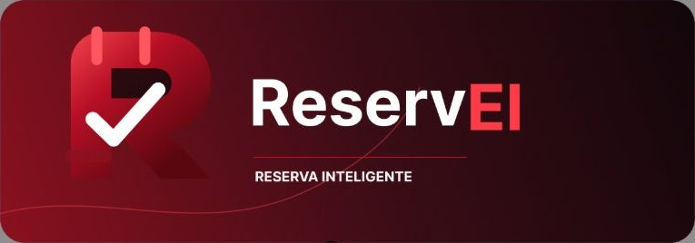
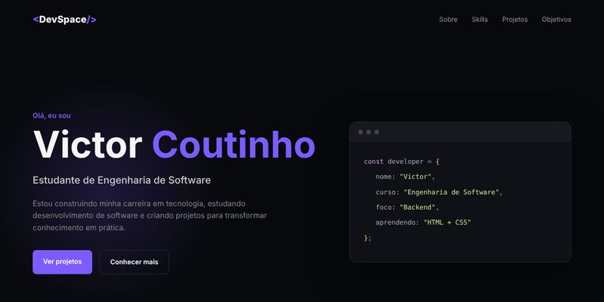

ReservEI
Sistema de gerenciamento de reservas e mesas de restaurante: telas mobile e desktop, fluxo do usuário, grid, dashboard, lista de reservas, fila de espera, mapa de mesas e cadastro de clientes.
Figma · UX/UI · PrototipagemOlá, eu sou o
Estudante de Engenharia de Software, focado em concursos e em crescer em cibersegurança e full stack.
Estudo Engenharia de Software e transformo cada matéria em prática: lógica, Python, banco de dados, C, interfaces e design.
Meu foco principal hoje são os concursos públicos, que me dão disciplina e constância. Em paralelo, mantenho a tecnologia em dia e quero me aprofundar em cibersegurança e desenvolvimento full stack.

Sistema de gerenciamento de reservas e mesas de restaurante: telas mobile e desktop, fluxo do usuário, grid, dashboard, lista de reservas, fila de espera, mapa de mesas e cadastro de clientes.
Figma · UX/UI · PrototipagemAplicativo web que explica os direitos de pessoas com TEA em linguagem simples.
Web app Abrir o siteLinha do tempo dos governos desde Fernando Henrique Cardoso até o atual mandato, com navegação por presidente, vídeo e seção sobre a trajetória democrática.
HTML · CSS · JavaScriptSite para um pet shop fictício, com apresentação, texto sobre cães, galeria de fotos, mapa e contato.
HTML · CSS Abrir o site Ver códigoPágina temática sobre Nossa Senhora Aparecida e o Dia das Crianças, com carrossel, história da data, sugestões de como celebrar e oração.
HTML · CSS · Bootstrap
Meu primeiro espaço de desenvolvimento: página responsiva em tema escuro, com menu mobile e seções sobre mim, skills e objetivos.
HTML · CSSMais de 140 horas de cursos concluídos em 2026. Clique no nome do curso para abrir o certificado em PDF.
Vamos construir algo juntos?